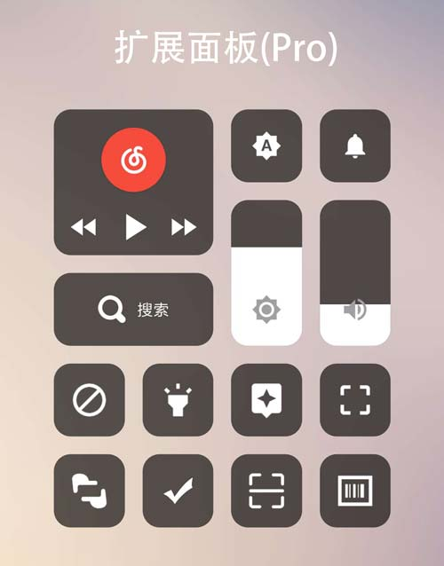

一、激活说明:
- 因安卓系统机型太多没法一一测试，不保证所有高级功能都可以有效工作于所有的机型之上（当然都是基于安卓api开发的，绝大部分的机型都可以得到完整支持）。
- android 10.0因权限问题无法读取手机机器码,所以无法激活和使用高级功能，准备升级到android 10.0请慎重激活。有条件的可以下载play版内购激活
- 购买激活码：
加支付宝好友购买，支付宝账号：hisnyang@gmail.com
不要直接转账，先加好友，有时工作忙，不一定能及时处理，请谅解！一般24小时内肯定会处理。
- 福利：激活码通用于开发者的另一应用【字母索引桌面】
- 原2019.5.11前激活用户有未使用的换机激活优惠继续有效，此时间之后激活不再有此优惠。
- 或者有条件的可以选择play版内购激活，play版和酷安版处理激活方式的不同其他并无区别(两个版本激活不通用)。play版地址：My gesture - Edge navigation gesture
- 注意：本软件只在酷安和play商店发布，其他来源均无法保证安全性，以上激活说明的最终解释权归开发者所有。
二、部分功能使用说明：
有些功能可能不方便描述，自己开启和关闭体会看看
- 【扩展面板(Pro)】：
在MyGesture的自定义手势里，选择一个手势打开‘扩展面板’，然后在任意界面，可以通过手势呼出扩展面板，在面板里，你可以打开你所设置的常用应用，亦可调节音量、调节亮度、快速进行网页搜索等。效果如下：

- 【上一个应用(Pro)】：
可以使用默认底边缘左右滑动来回切换上一个应用和当前应用（需先在高级设置内开启）。也可以自定义手势里设置一个手势为‘上一个应用’，来打开上一个应用。不想被上一个应用打开的，比如：输入法、桌面等请到‘高级设置’里设置应用切换黑名单。。
- 【底边缘左右滑动切换应用】:
左滑或右滑切换上一个应用。开启“应用切换可视化后”，左右滑动底边缘后不要松手连续滑动，可以在显示的最近应用列表内来回切换选择，松手后打开选择的应用。可视化切换应用列表是按时间记录的所有出现在窗口的应用（和系统最近应用列表可能略有出入），可将不希望出现在切换列表的应用加入到应用切换黑名单
- 【过渡动画】：
现有三种可选：跟随手势‘平移’、跟随手势‘缩放’、平移+缩放。选‘无’为系统自带过渡动画。(Ps:有些rom自带桌面有默认动画动作，可能回桌面过渡动画设置无效。另小部分机型选择回桌面的动画会导致桌面闪退的，请开启设置内的“兼容home键”选项，开启后回桌面动画设置无效。)
- 【通知呼吸灯】：
显示呼吸灯期间点击两侧边缘触发区可以直接打开通知。需按提示授权MyGesture的通知使用权
- 【熄屏呼吸灯】：
显示熄屏呼吸灯期间点击中心图标可以关闭呼吸灯，解锁可以直接打开通知。建议通过“管理显示通知呼吸灯的应用”勾选需要通知的应用。
- 【管理显示通知呼吸灯的应用】：
默认在不勾选任何应用的情况下，任何应用通知都会显示呼吸灯。当勾选了一个或多个应用到白名单后，只有勾选的应用通知才会显示呼吸灯。
- 【禁止触摸】：
通过扩展面板添加，开启此功能后屏幕的触摸操作将被阻挡。禁止触摸时双击屏幕可以切换黑屏和透明阻挡层，在屏幕上画一个◯后解除禁止(可多次尝试，需尽量圆一点),禁止和解除都有吐司提示。
三、无root隐藏导航栏：
- 自带系统手势的机型，为了避免和系统手势冲突，建议将系统手势改成虚拟按键，然后通过电脑adb命令隐藏虚拟按键：
adb shell wm overscan 0,0,0,-150
命令最后一个参数“-150”，为导航栏高度，需要根据你的机型分辨率微调。以上命令可多次使用，调整到合适为止。要恢复导航栏只需把最后一个参数“-150”改成“0”，再运行一遍命令即可
四、保持后台运行：
五、FAQ：
整理一些大家常问到的问题，慢慢更新
- Q:无障碍服务自动关闭？
A:需保持MyGesture的后台不被关闭，参考上方保持后台方法
- Q:使用手势打开应用/切换应用，只有在MyGesture页面有效？
A:MIUI需开启MyGesture的“后台弹出界面”权限
- Q:长按并滑动手势，怎么改成先滑动再停顿方式？
A:开启“手势离开屏幕后触发”选项
- Q:一加系统返回操作有两次振动？
A:因一加系统对返回操作有附加一次振动，手势其实只发出一次振动。需要到系统内关闭振动反馈
- Q:怎么让MyGesture不在最近任务中显示？
A:在MyGesture的主页面，按返回键，弹出是否隐藏对话框，选是
- 我是有底线的 -